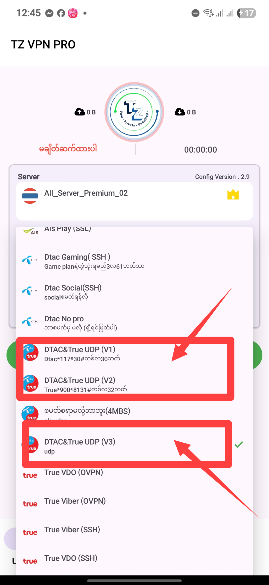
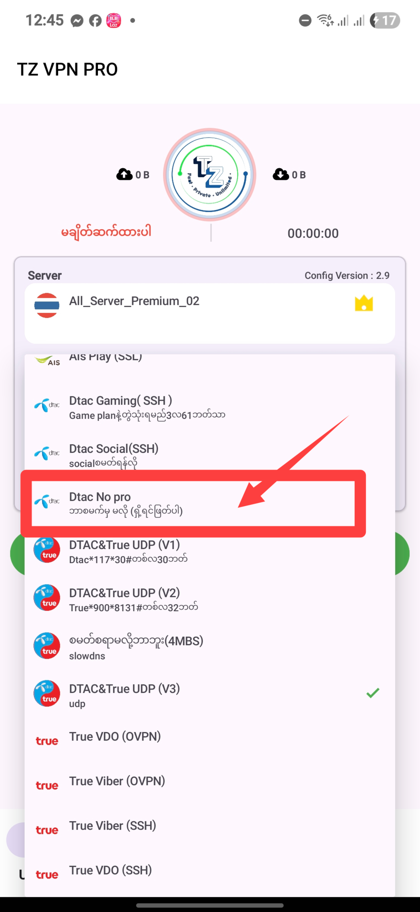

DTAC စမတ်နည်း
Back
DTAC Setup Guide
အောက်ပါ နည်းလမ်းများအတိုင်း လုပ်ဆောင်ပါ။
ကြိုင်ဒီအရံနက် package (30)ရက် *117*30# (30)ဘတ်

No Pro package လက်ကကြန်များဖျက်ပီးသုံးပါ

Dtac Game package (dtac appထဲ ဝင်စမက်ပါ) ရက်(90) 63ဘတ်
လမ်းညွှန် (၄): APN ကို ထည့်သွင်းပါ
လမ်းညွှန် (၅): သိမ်းဆည်းပြီး အသုံးပြုပါ